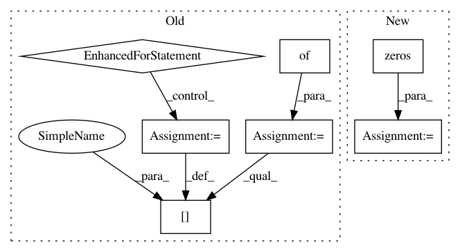

cce694178ae66b3a84623d517ffdf0c1bb32ba27,pyro/infer/mcmc/hmc.py,HMC,_sample_r,#HMC#Any#,206
Before Change
return step_size
def _sample_r(self, name):
r = {}
r_flat_dict = {}
for site_names in self.inverse_mass_matrix:
r_flat = pyro.sample(
"{}_{}".format(name, site_names), self._adapter.r_dist[site_names])
pos = 0
for name in site_names:
param = self.initial_params[name]
next_pos = pos + param.numel()
r[name] = r_flat[pos:next_pos].reshape(param.shape)
pos = next_pos
assert pos == r_flat.size(0)
r_flat_dict[site_names] = r_flat
return r, r_flat_dict
After Change
for site_names, size in self.mass_matrix_adapter.mass_matrix_size.items():
// we want to sample from Normal distribution using `sample` method rather than
// `rsample` method because the former is a bit faster
r_unscaled[site_names] = pyro.sample(
"{}_{}".format(name, site_names),
NonreparameterizedNormal(torch.zeros(size, **options), torch.ones(size, **options)))
r = self.mass_matrix_adapter.scale(r_unscaled, r_prototype=self.initial_params)
return r, r_unscaled
In pattern: SUPERPATTERN
Frequency: 3
Non-data size: 7
Instances
Project Name: uber/pyro
Commit Name: cce694178ae66b3a84623d517ffdf0c1bb32ba27
Time: 2020-05-11
Author: fehiepsi@gmail.com
File Name: pyro/infer/mcmc/hmc.py
Class Name: HMC
Method Name: _sample_r
Project Name: EpistasisLab/tpot
Commit Name: 2ab8c1444facbd46df8767a5badda5b9f1a50c29
Time: 2016-08-01
Author: supacoofoo@gmail.com
File Name: tpot/tpot.py
Class Name: TPOT
Method Name: predict
Project Name: PIQuIL/QuCumber
Commit Name: e822a02daa1cd1c42f6d2bf309d5996a21979ef1
Time: 2018-07-31
Author: gtorlai@uwaterloo.ca
File Name: qucumber/tests/test_grads_positive.py
Class Name:
Method Name: algorithmic_gradKL